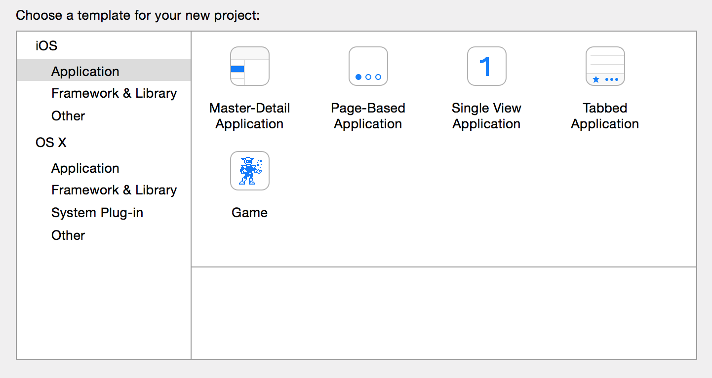
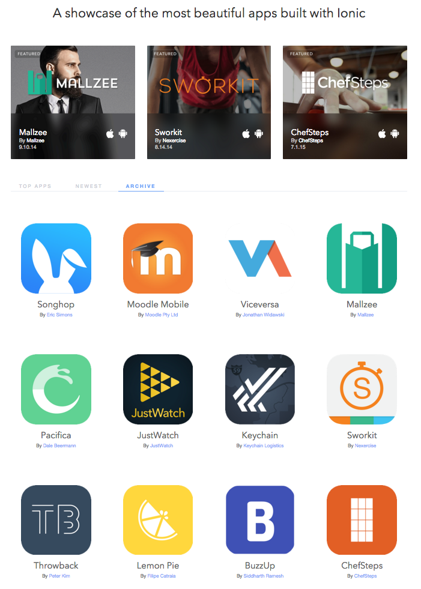
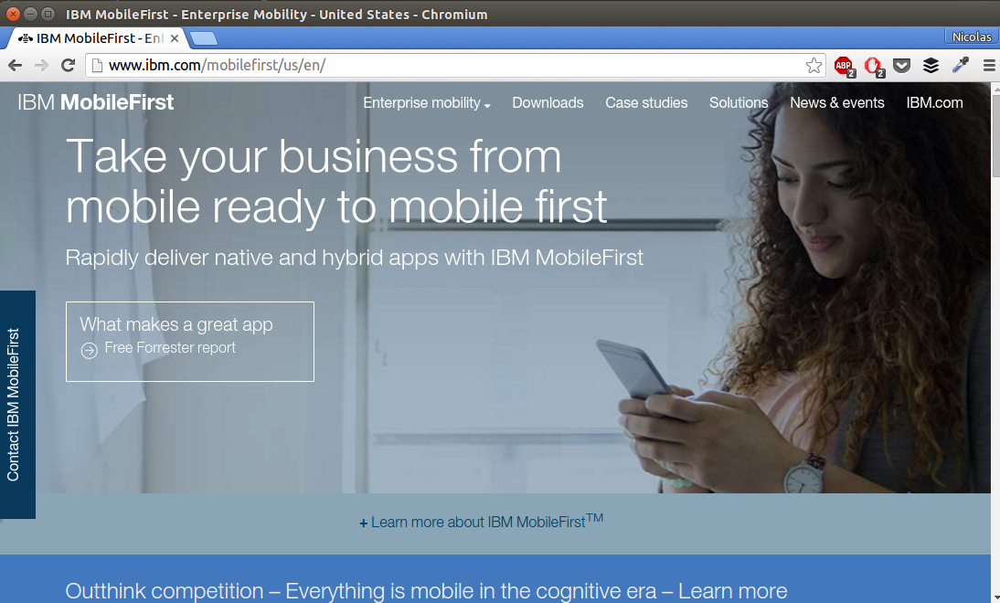
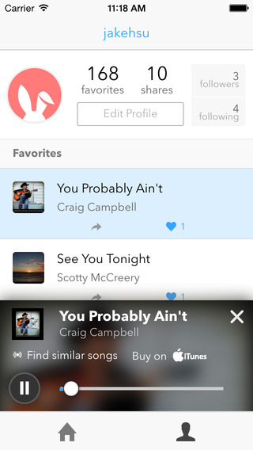
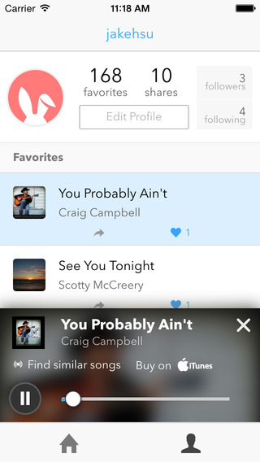

#HAppsChile

V2
Carlos Rojas | @carlosrojaso
{
name: 'Carlos Rojas',
twitter: '@carlosrojas_o',
github: 'https://github.com/carlosrojaso'
jobs: [
'Consultor',
'Entrenamiento',
'Desarrollador'
],
organizer: [
'http://www.meetup.com/es-ES/Hybrid-Apps-Chile/'
]
}
www.sponzor.me
Ionic 2 esta en 2.0.0-beta.10
Estamos proximo al Release Candidate.
Ionic V1!
SDK para desarrollar Apps Hibridas
Enfocado en movil primero.
Sass para facil personalización.
Angular para estructurar el codigo.
Los SDKs Nativos...
Son Grandiosos!!
UI Comun, APIs, Vistas, Navegación, Historial de Stack, Transiciones, Interacciones, Gestos, etc.
Tecnologias moviles que tu ya
Conoces & Amas


(Te sientes como en casa)
Superpoderes por
Angular
Extiende el vocabulario HTML
Probado para un desarrollo a gran escala
Componentes UI usando Directivas & Servicios

Enfocado en Nativo
- Siguiendo el modelo de los SDKs Nativos.
- Construido para trabajar con Cordova.

Obsesionado con el rendimiento
- Animaciones acelerada por Hardware.
- Minima manipulación del DOM.
- Se removio el tap delay de 300ms.

CSS Plano
- Sistema visual cohesivo
- Claro y simple
- Facil de personalizar
- Stand-alone CSS (independiente del Javascript en Ionic)
Sass!
CSS generado desde el preprocesador Sass
Rapidamente da a tus apps su propia Apariencia
CSS diseñado para ser facilmente sobreescrito
Basado en variables con configuraciones por defecto
Ionic parece estar tomandose el mundo :)
ShowCase
http://showcase.ionicframework.com/ IBM Mobile
http://www.ibm.com/mobilefirst/ Apps
 

Algunos datos...
De los 34 más populares proyectos Open Source (20,000+ estrellas en GitHub)
UN MILLON de apps construidas con el SDK
105 Meetup Groups alrededor del mundo
Ionic apps top app store charts
Usado en todos lados desde
Compañias Fortune 50 hasta compañias YC/TechStars
Ionic V1 es grandioso
Pero muchas cosas han cambiado desde su release.
2 años es un largo tiempo en tecnologia.
Muchos cambios
Dispositivos mas rapidos y mejores
Menos dispositivos de gama baja
Amplia variedad de APIs en Internet!
Mejoras en los motores web

V2 es el mismo framework poderoso, pero construido para el futuro
v2 Apunta a
Simplicidad
Continuidad de Plataforma
Rendimiento
Libertad creativa
Escribir una vez
Hablar es barato
Veamos algo de codigo
Simplicidad
Usando propiedades en lugares de clases
V1 Buttons
Clases pueden ser
complejas y desordenadas
Ahora se mueven a propiedades
Facil de entender y menos markup
Facil de reemplazar con Clases
<a button primary></a>
<a button outlined secondar></a>
<a button clear dark></a>
<a button danger>
<icon close></icon>
</a>
Ionic 2 usa propiedades en los elementos
Menos desorden, facil de entender, y facil de personalizar
No cambias como escribes tus estilos.
UX cercana a Nativa
Los diferentes modos de Ionic 2
Continuidad de Plataforma
iOS, Android, Windows10
Un codigo base
Mismas markup y clases
Interacciones personalizadas

Icons
Action Sheet
presentActionSheet() {
let actionSheet = ActionSheet.create({
title: 'Modify your album',
buttons: [
{
text: 'Destructive',
style: 'destructive',
handler: () => {
console.log('Destructive clicked');
}
},{
text: 'Archive',
handler: () => {
console.log('Archive clicked');
}
},{
text: 'Cancel',
style: 'cancel',
handler: () => {
console.log('Cancel clicked');
}
}
]
});
this.nav.present(actionSheet);
}
SideMenu
<ion-menu [content]="content">
<ion-toolbar>
<ion-title>Pages</ion-title>
</ion-toolbar>
<ion-content>
</ion-content>
</ion-menu>
<ion-nav id="nav" #content [root]="loginPage"></ion-nav>
Navegación
Construido usando clases de animación simple
Facil de cambiar y agregar nuevas animaciones
Simple push/pop metafora
Altamente configurable
config: {
backButtonText: 'Go Back',
iconMode: 'ios',
modalEnter: 'modal-slide-in',
modalLeave: 'modal-slide-out',
tabbarPlacement: 'bottom',
pageTransition: 'ios',
}
Navegación
Más robusta y poderosa
V1's Routing
.config(function($stateProvider){
$stateProvider
.state('firstpage', {
url:'/firstpage',
templateUrl: 'firstpage.html'
})
.state('secondpage', {
url:'/secondpage',
templateUrl: 'secondpage.html'
})
.state('thirdpage', {
url:'/thirdpage/:id',
templateUrl: 'thirdpage.html'
});
});
UI-Router
No te provee la flexibilidad que necesitas
Navegacion: experiencia de usuario
URLs no ofrecen eso
Developers Necesitan estar en control
Push/Pop/Params
import SecondPage from '../secondpage';
export class FirstPage {
constructor(
public nav: NavController) {};
pushState() {
this.nav.push(SecondPage)
};
};
Control Total
Push pages en la pila de navegación
Pop pages fuera de la pila de navegación
Insert/Remove/Update
Crear un historial de app desde la nada
Actualizar la url como una opcion
Tooling para todo el mundo
Construyendo Apps con el nuevo estandar
JavaScript ha cambiado
ES6 trae nuevas caracteristicas
Typescript construye encima de eso
Todo esto, te ayuda a desarrollar mas rapido
ES6
Modular: Importa lo que necesitas
Scoping: let define el alcance de las variables
Promises: Construido dentro del lenguaje nativamente
Classes: Sintaxis simple para construir bloques
Elige lo que es correcto
Ionic soporta: ES6 o TS
Puedes enfocarte en escribir tu App
Nuestro sistema de build maneja todo el resto!
Este "solo funciona"